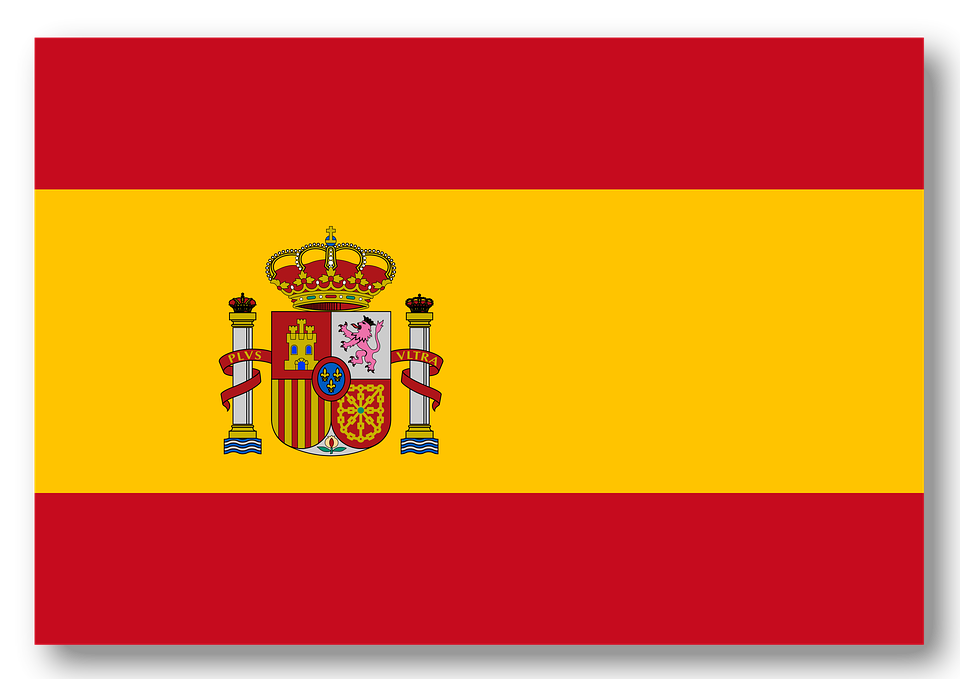
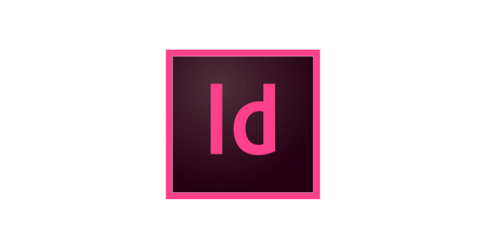
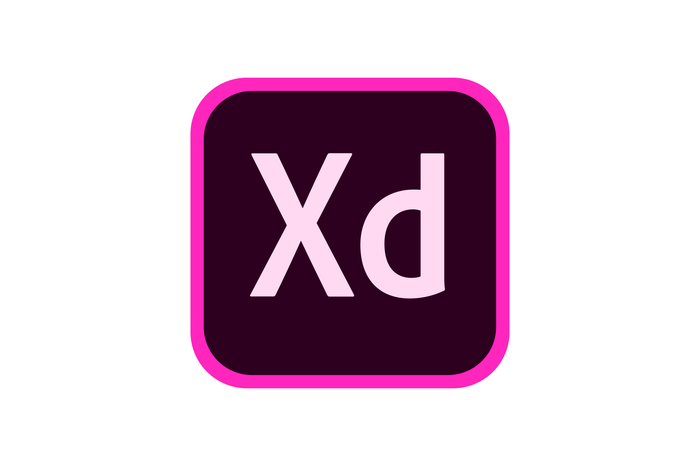
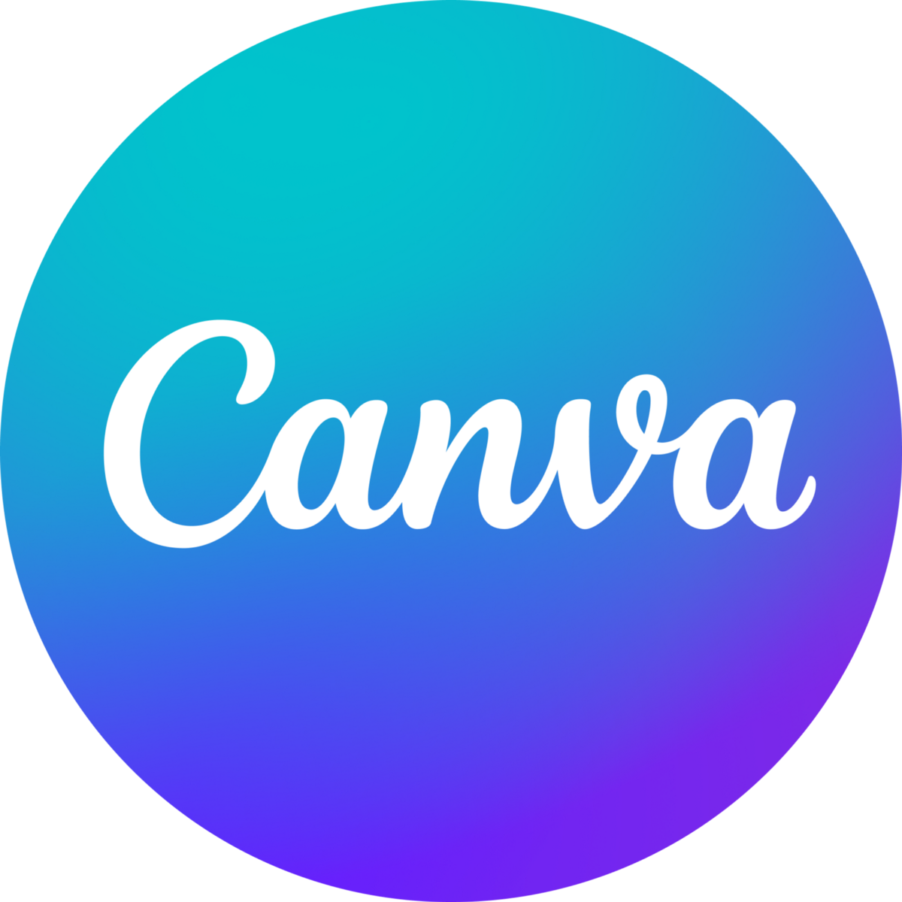

Social Media Management
 ENZO CHEMIN
ENZO CHEMIN
· 32 Rue des Arsins - Appt B23 - 76000 Rouen
· echemin@normandiewebschool.fr
· 06.35.02.57.45
CONTACT
OBJECTIFS
Obtenir une alternance de 2 ans dans le domaine de la communication sur les réseaux sociaux afin de perfectionner mes compétences dans les domaines qui me seront les plus utiles dans mon futur emploi.
2018 - BACCALAURÉAT GÉNÉRAL (OPTION MATHÉMATIQUES)
2018-2019 - ÉTUDES DE STAPS
Après avoir obtenu ma PACES dès la première année, j’ai pu acquérir des compétences de travail en équipe et une méthode de travail rigoureuse lors de la 2ème année qui me serviront tout au long de mon parcours professionnel.
2019-2022 - 2e & 3e ANNÉE DE MÉDECINE
Apprentissage du Développement Web, de la Communication Graphique, du Web Marketing et du Community Management.
2022-2025 - NORMANDIE WEB SCHOOL
FORMATION
2020 - CHU DE ROUEN - Stage infirmier
2021-2022 - FRESENIUS KABI FRANCE - Agent qualifié de production
Réalisation de plusieurs visuels pour les réseaux sociaux, plans de communication, planning éditorial, rédaction d’articles de blogs, montage photo et montage vidéo.
Contrôle qualité des produits, conduite d’une ligne de conditionnement et d’assemblage dans le domaine pharmaceutique.
2022-2023 - NORMANDIE WEB SCHOOL - Social Media Management
Création d’un logo et d’une charte graphique, création d’un site en WordPress, réalisation d’une étude de marché, d’un plan de communication, de visuels réseaux sociaux et d’un article de blog pour l’évènement 2023.
2022 - CHEER HOPE - Chef de projet digital
EXPÉRIENCE PROFESSIONNELLE
· Rigueur
· Persévérance
· Autonomie
· Travail en équipe
COMPÉTENCES HUMAINES
Espagnol : Niveau A2
Anglais : Niveau B2
LANGUES

Figma
Adobe InDesign
Canva
Adobe XD
Adobe Photoshop
Adobe Illustrator
Premiere Pro
WordPress





COMPÉTENCES TECHNIQUES
CENTRES D’INTÉRÊTS
Musique
Sport
Mode